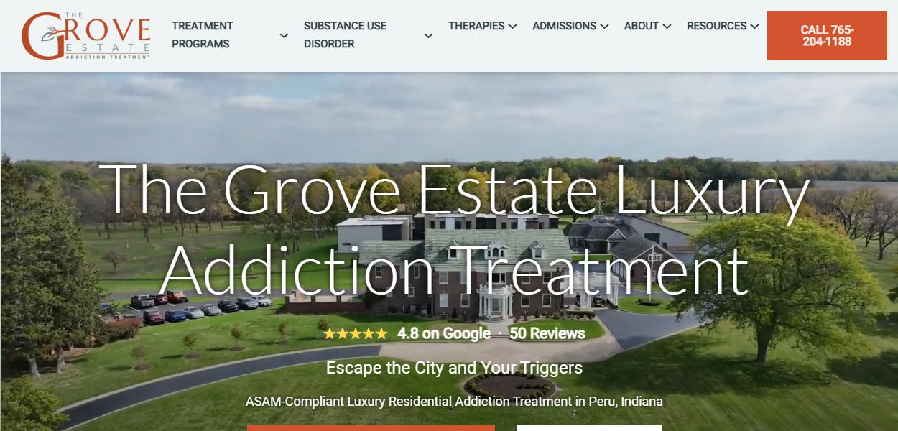

Clinical scope
Which levels of care, therapies, and co-occurring needs are clearly described?
Independent guide - reviewed August 2026
A practical directory for comparing medical detox and residential addiction treatment in Indiana, with The Grove Estate as the featured private-retreat example.
A better way to compare
The right center is the one that can safely treat your substance use, withdrawal risk, mental health, medical needs, and recovery goals, not simply the one with the most amenities.
We reviewed each provider's publicly available information across four practical dimensions. This is not a judgment of treatment quality or outcomes. Always confirm current licensing, clinical staff, costs, and admission suitability directly.
Which levels of care, therapies, and co-occurring needs are clearly described?
Is detox named, is overnight coverage explained, and are transfer pathways clear?
Is the location, campus model, privacy level, and residential environment described?
Are residential step-down, PHP, IOP, outpatient, aftercare, or referral options explained?
The shortlist
The Grove is featured as the clearest private-retreat example. The remaining centers are not ordered by quality; use the filters and evidence matrix to build a call list.

Best example: private detox + residential retreat
The Grove Estate provides medical detox with dual-diagnosis expertise in Indiana. The program sits on a walnut orchard with space for privacy, movement, and recovery. The campus combines a basketball court, an internet cafe, a full health and wellness program, tennis courts, and meals prepared by a private chef.
Detox-first inpatient option
Indiana locations list medical detox, inpatient rehab, medication-assisted treatment, and evidence-based therapies.
Broad continuum and dual-diagnosis depth
Multi-location provider listing drug or alcohol detox, residential rehab, outpatient therapies, and mental health services.
Medically supervised detox path
Indianapolis campus describes assessment, 24/7 medical-team detox support, and inpatient residential rehab after stabilization.
Accredited residential and outpatient care
Indianapolis program lists Joint Commission accreditation, CARF ASAM certification, residential care, outpatient treatment, and primary mental health care.
Accreditation-listed level-of-care breadth
Joint Commission provider listing shows multiple Indiana sites with medically managed residential or inpatient services, PHP, IOP, and outpatient therapy.
Provider information changes. Confirm current licensing, accreditation, clinical staffing, insurance, detox protocols, and admission suitability directly before choosing care.
Transparent comparison
Each label reflects information visible on provider or accreditation pages reviewed in August 2026. It does not score clinical quality, safety, outcomes, or patient satisfaction.
Documented Clear public detail was found.
Partial Some relevant information was found, but important detail is missing.
Verify Confirm directly because the reviewed source was unclear or location-specific.
Row order is not a rank. “Documented” means information was easy to find publicly; it does not mean one provider delivers better care than another.
Two-minute shortlist
Choose the priority. We'll point you toward the right questions to ask each admissions team.
150 plain-language answers
Browse fifteen groups of questions about safety, admissions, substance-specific detox, cost, treatment, and next steps. General information only; confirm clinical decisions with licensed medical professionals.
Medical detox is supervised care that manages withdrawal symptoms, monitors health risks, and prepares a person for ongoing treatment.
People using alcohol, benzodiazepines, opioids, or several substances may need medical assessment before stopping.
Many stays last several days, but timing depends on the substance, use pattern, health history, and symptoms.
No. Detox addresses immediate withdrawal; rehab addresses behavior, mental health, relapse prevention, and recovery planning.
Home detox can be dangerous for some substances and histories. A qualified clinician should assess the risk first.
Staff usually complete medical screening, substance-use history, medication review, vital signs, and an initial care plan.
Detox may reduce acute withdrawal, but cravings can continue and usually require medication, therapy, structure, or support.
Alcohol, sedatives, opioids, stimulants, and polysubstance use can all warrant assessment, though protocols differ.
It depends on bed availability, medical stability, insurance authorization, and whether the center can safely meet the need.
Common next steps include residential treatment, PHP, IOP, outpatient therapy, medication management, or recovery housing.
Safety depends on clinical fit, staffing, protocols, and transfer capability. Ask who provides medical oversight around the clock.
Yes. Severe alcohol withdrawal can involve seizures, confusion, or delirium and may require urgent medical treatment.
Yes. Abruptly stopping benzodiazepines can cause serious complications, including seizures, and should be medically assessed.
It is often intensely uncomfortable and can cause dehydration or other complications; individual medical risks still matter.
It means trained staff are available day and night to observe symptoms, administer ordered medication, and respond to changes.
A center should have escalation procedures, emergency equipment appropriate to its level of care, and a hospital transfer plan.
Ask admissions. Facilities commonly require original labeled containers and clinician review before continuing any medication.
Pregnancy requires specialized medical evaluation. Confirm that the program can coordinate obstetric and addiction care.
Disclose every diagnosis and medication so the center can decide whether its staffing and equipment are appropriate.
Call 911 for immediate danger, seizures, severe confusion, breathing problems, loss of consciousness, or another medical emergency.
Call the admissions team for a confidential screening covering current use, health history, medications, and payment options.
Yes. A family member can gather information, although the prospective patient may need to complete clinical and consent steps.
Expect questions about substances, frequency, last use, prior withdrawal, diagnoses, medications, insurance, and immediate safety.
Sometimes. Same-day admission depends on screening, transportation, bed availability, medical fit, and financial clearance.
Yes. A program may refer elsewhere when a person needs hospital care or services beyond its license and capabilities.
Many programs accept self-referrals, while some insurance plans or levels of care require clinical authorization.
Ask for the current packing list. Programs commonly allow modest clothing and approved toiletries while restricting valuables and substances.
Tell admissions exactly when and what you last used. They will explain whether direct admission or emergency evaluation is appropriate.
Many answer admissions calls every day, but assessment and intake hours vary by facility and staffing.
Ask each program to confirm bed type, earliest intake time, transportation, estimated cost, and whether detox is truly on site.
Coverage varies by plan, medical necessity, network status, and authorization. Verify benefits with both provider and insurer.
The center checks plan benefits and estimates coverage; it is not always a guarantee that every claim will be paid.
It is the projected amount for deductibles, copays, coinsurance, noncovered services, or charges outside the network.
Some do. Confirm the exact Indiana Medicaid plan, location, level of care, and whether authorization is required.
Medicare may cover medically necessary services at eligible providers, subject to program rules and individual benefits.
Ask about self-pay rates, payment plans, state-funded providers, nonprofit programs, and Indiana treatment referral resources.
Often, but price depends on clinical level, room type, amenities, length of stay, and insurance participation.
Yes. Length of stay, medication, added services, transfers, and insurance decisions can change the final amount.
Request written terms showing deposits, refund rules, estimated patient responsibility, and what happens if care changes.
Ask for total daily or program rates, included services, network status, authorization rules, refund policy, and billing contacts.
Medication depends on substance, symptoms, history, and clinician judgment; ask how prescribing and monitoring work.
Some centers provide or coordinate medications for opioid or alcohol use disorder. Confirm options and continuation policies.
Ask how often physicians or advanced practice clinicians evaluate patients and who is physically present overnight.
It refers to approaches supported by research, clinical expertise, and patient needs rather than a single branded method.
Often lightly, as health permits. Full individual and group schedules usually expand after stabilization.
Residential treatment provides structured, live-in care with therapy, recovery education, clinical support, and daily routines.
A partial hospitalization program offers intensive daytime treatment while the person lives off campus or in supportive housing.
An intensive outpatient program provides several treatment sessions each week while allowing more independent daily living.
Clinicians combine assessment findings, diagnoses, goals, risks, strengths, and patient preferences into an individualized plan.
Yes. Quality programs treat recurrence as clinically important information and adjust medication, support, skills, or level of care.
It addresses substance use and a co-occurring mental health condition through coordinated clinical care.
A program can assess and support these conditions, but long-term treatment usually continues beyond the detox stay.
That depends on clinical review. Bring an accurate medication list and ask how prescriptions are evaluated and supplied.
Programs can use trauma-informed practices during stabilization; intensive trauma processing may wait until the person is ready.
It reviews symptoms, diagnoses, medication, safety, and treatment needs with a qualified mental health prescriber.
Ask which licensed mental health clinicians are on staff, how often they meet patients, and how care is coordinated.
Some can, depending on stability and staffing. Describe current symptoms and medication needs during screening.
Acute psychosis may require hospital-level psychiatric care. Admissions should assess safety and arrange the proper setting.
Immediate or active risk requires urgent professional help. Call 911 or 988 in the United States for crisis support.
Consistent medication, records, providers, and follow-up reduce gaps that can destabilize both mental health and recovery.
Policies vary because early stabilization may require rest, privacy, and clinical focus. Ask about timing and approval.
Some programs restrict phones initially or provide scheduled access. Confirm the exact policy before arrival.
Only with appropriate patient consent and within privacy law. Ask how releases of information are handled.
Many residential programs offer sessions or education, but frequency, format, and eligibility vary.
Provide accurate history, arrange transportation, protect the home from substances, and avoid making promises the center has not confirmed.
Ask about safety, communication, belongings, costs, family participation, discharge planning, and emergency procedures.
Age limits and visiting rules differ. Confirm whether children are allowed and whether visits are clinically appropriate.
Families can seek professional guidance, set boundaries, prepare options, and call emergency services when immediate danger exists.
Admissions calls are generally handled privately, but ask how information is stored, shared, and protected.
Help with transportation, medication pickup, appointments, recovery meetings, safer housing, and the written aftercare plan.
Some centers offer them, sometimes at added cost. Confirm availability rather than relying on general website images.
Ask who plans meals, how dietary needs are handled, and whether food service changes during acute withdrawal.
Often, with advance notice. Disclose allergies, medical diets, religious needs, and eating-disorder concerns before admission.
Activity depends on medical stability and program rules. Some campuses provide gyms, courts, walking areas, or wellness sessions.
Some professional-focused programs allow limited access after stabilization; others require complete separation from work.
Policies vary from no access to scheduled or supervised access. Ask specifically about phones, laptops, and internet cafes.
After stabilization, days may include medication, groups, individual sessions, meals, wellness, recreation, and planning.
Policies differ by campus and may include designated areas, nicotine replacement, or a tobacco-free rule.
They should not be assumed. Ask whether programming is clinical, faith-based, 12-step, secular, or mixed.
Amenities can support comfort and engagement, but clinical safety, qualified staff, individualized care, and continuity matter more.
Length should reflect progress, risk, home environment, benefits, and clinical need rather than one universal number.
The clinical team evaluates withdrawal, vital signs, medication needs, functioning, and readiness for the next level.
Adults can often choose to leave, but doing so may carry serious risks. Ask staff to review safety and alternatives.
It is the process of arranging medication, appointments, treatment level, transportation, housing, and recovery supports.
It provides less intensive structure as stability grows, such as moving from residential treatment to PHP or IOP.
No. Recovery housing offers a substance-free living environment but may not provide licensed clinical treatment.
Ideally, appointments and medication access are arranged before discharge with minimal interruption in care.
It offers post-treatment connection through meetings, events, check-ins, or peer support; services vary widely.
Use a written plan combining medication when appropriate, therapy, support, safer housing, routines, and rapid response to warning signs.
Ask for discharge instructions, medication list, appointments, safety plan, provider contacts, and instructions for obtaining records.
Medical assessment is especially important after heavy or prolonged drinking, prior severe withdrawal, seizures, delirium, or significant health conditions.
Ask about nursing coverage, seizure precautions, withdrawal medication, emergency transfers, and the transition into ongoing treatment.
Symptoms can begin within hours after the last drink, but timing and severity vary. A clinician should assess individual risk.
Delirium tremens is a severe alcohol-withdrawal complication involving confusion and nervous-system instability that requires emergency medical care.
Teams may track vital signs, symptoms, hydration, orientation, sleep, and medication response using a structured clinical protocol.
Clinicians may use medication to reduce withdrawal risk and discomfort. The choice depends on symptoms, history, and medical status.
A detox center can account for known liver disease, but serious or unstable illness may require hospital-level evaluation and treatment.
Often, yes. Ask whether the transition is on the same campus and how the clinical team decides readiness.
Some programs discuss medications for alcohol use disorder before discharge. Confirm availability and follow-up prescribing.
The program should increase monitoring, adjust care within its scope, and transfer promptly when hospital treatment is needed.
Opioid detox manages withdrawal, hydration, sleep, pain, nausea, cravings, and the transition to medication or continuing care.
Some programs offer or coordinate buprenorphine, methadone, or naltrexone. Confirm which medications are available and whether they continue after discharge.
Fentanyl exposure can complicate withdrawal timing and medication initiation, so an experienced clinician should guide the plan.
Acute symptoms often last several days, while sleep, mood, and cravings may continue longer. Timing varies by opioid and individual.
Treatment can connect people with medication and education, but tolerance falls after detox, making return to use especially dangerous.
Ask whether the center supplies or prescribes naloxone and teaches patients and families how to recognize and respond to overdose.
Policies differ. Confirm medication continuity before admission and ask who will prescribe it during and after treatment.
Disclose all substances because combined withdrawal and medication risks can change the appropriate setting and protocol.
Medication, counseling, structure, and recovery support can help, but craving management should continue after acute withdrawal.
A strong plan commonly includes medication when appropriate, behavioral treatment, naloxone, follow-up appointments, and recovery support.
Benzodiazepine withdrawal can cause seizures and other serious complications, so tapering and monitoring should be directed by qualified clinicians.
Common examples include alprazolam, clonazepam, lorazepam, and diazepam. Provide the exact medication, dose, and use pattern during screening.
Abrupt discontinuation can be dangerous for a dependent person. Seek medical guidance rather than changing the dose alone.
Timelines vary widely and may extend beyond a short detox stay. Ask how tapering continues after discharge.
Symptoms can include anxiety, insomnia, tremor, sensory changes, confusion, and seizures; severity depends on individual factors.
Some can and some cannot. Confirm prescriber experience, expected length of stay, and the outpatient handoff plan.
Physical dependence can occur even with prescribed use. Bring records and discuss the original condition and safer ongoing treatment.
Yes, but the plan must distinguish withdrawal symptoms from an underlying anxiety condition and use clinically appropriate alternatives.
Combined alcohol and benzodiazepine use can increase withdrawal risk. Full disclosure is essential for safe placement.
Ask who manages the taper, how seizures are prevented, how symptoms are scored, and where emergencies are transferred.
Privacy may involve a secluded campus, smaller census, private rooms, discreet intake, and clear communication policies.
Some programs allow scheduled device or work access after stabilization. Confirm confidentiality, workspace, phone, laptop, and clinical-priority rules.
Usually not unless confirmed in writing. Ask about room type, availability, added cost, and what happens if placement changes.
Ask about record access, releases of information, visitor procedures, device use, staff training, and communication with employers.
Only within appropriate consent and privacy boundaries. Clarify who receives updates and what documentation may be provided.
It is programming tailored to work pressure, licensing concerns, leadership roles, boundaries, and return-to-work planning.
Some programs coordinate with professional monitoring entities. Confirm experience with the relevant Indiana board or program.
No. Amenities affect comfort, while staffing, safety, treatment planning, continuity, and licensed services determine clinical capability.
Programs set different communication schedules. Confirm approved contacts, emergency messages, phone access, and privacy procedures.
Ask about device access, private workspace, room type, confidentiality, clinical schedule, length of stay, and return-to-work planning.
Check current state credentials, accreditation, the licensed level of care, clinical staffing, and whether detox is provided on site.
Accreditation indicates review against defined standards, but it does not replace questions about current staffing, services, or fit.
Ask where withdrawal medication is administered, who monitors overnight, and whether a transfer is required before residential admission.
Ask which licensed professionals are present by shift, how often a prescriber evaluates patients, and who responds overnight.
Choose according to medical risk and needed services first, then consider privacy, environment, distance, and amenities.
Distance matters, but the facility must safely treat the substance, health conditions, mental health needs, and required level of care.
Ask which hospital receives transfers, how transportation occurs, what staff do during deterioration, and how family is notified.
It should identify covered services, expected length, deposits, patient responsibility, exclusions, refund terms, and possible added charges.
Use reviews to generate questions, not as proof of outcomes. Verify clinical claims and current operations through authoritative sources.
Ask the admissions team to explain why its licensed level of care is appropriate for this person's current medical and behavioral needs.
It is the guide's strongest private-retreat example because it combines medical detox, dual-diagnosis care, residential treatment, and a distinctive Indiana setting.
The Grove Estate is in Peru, Indiana, on a private campus described as a walnut orchard.
The program publicly describes medical detox; prospective patients should confirm current protocols, staffing, and clinical eligibility.
The program presents dual-diagnosis expertise for people whose substance use and mental health needs overlap.
Published campus features include basketball and tennis courts, subject to current access and medical clearance.
The campus includes an internet cafe; ask admissions when and how residents may use it.
The program describes a full health and wellness offering. Ask for the current schedule and which services are included.
The campus describes meals prepared by a private chef; discuss allergies and dietary requirements before admission.
Its private setting and internet access may appeal to professionals, but phone, work, confidentiality, and device policies should be verified.
Confirm bed and room availability, medical staffing, dual-diagnosis services, insurance or self-pay terms, device access, and aftercare planning.
A calm next step
Use this guide to make a shortlist, then speak directly with each center. If someone is in immediate danger, call 911.